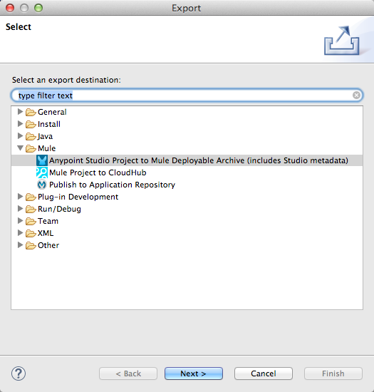

Shared Resources
Mule supports the ability to define selected connectors as common resources and expose them to all applications deployed under a same domain. These resources are known as shared resources, to host these you must create a Mule Domain Project and then reference it on each of the projects that are meant to use the elements in it. Once defined, any Mule application associated with a particular domain can access resources in this file. Note that Mule applications can be associated with only one domain at a time.
Shared resources allow multiple development teams to work in parallel using the same set of reusable connectors. Defining these connectors as shared resources at the domain level allows the team to:
-
Expose multiple services within the domain through the same port
-
Share the connection to persistent storage
-
Share services between applications through a well-defined interface
-
Ensure consistency between applications upon any changes, as the configuration is only set in one place
Prerequisites
This document assumes that you are using Anypoint Studio with Mule runtime 3.6 or newer, or that you are building your applications outside Studio and deploying them to Mule Standalone 3.5.0 runtime or newer.
Limitations
-
Defining flows, subflows, or any message processors as shared resources is not supported.
-
To share a WMQ connector as a shared resource, you need to remove the mule-transport-wmq-ee-<mule-version>.jar file from the $MULE_HOME/lib/mule/per-app/ directory and remove all the native jars for wmq connectivity in your application’s $MULE_HOME/apps/<my-app>/lib/ directory. Place all these jars in the $MULE_HOME/domains/<my-domain>/lib/ folder instead.
-
Adding properties in the configuration files of applications that use shared resources can result in issues, as these properties are shared with other apps in the domain and there may be conflicts. You can instead set environment variables.
-
Only the following connectors and related specifications can be specified as shared resources at this time:
-
HTTP/HTTPS (both endpoints and connectors)
-
VM
-
JMS
-
JMS Caching Connection Factory
-
Database
-
WMQ
-
JBoss Transaction Manager
-
Bitronix Transaction Manager
-
Basic Anatomy
The following files are key within the Mule Domain Project:
mule-domain-config.xml |
This is the shared resources configuration file. This file must have the |
/lib |
This directory can contain libraries associated with the domain. Place the JDBC drivers for the datasources that you define as shared resources here or JMS broker APIs needed for the JMS connector. |
Configuration
To use shared resources in your applications, you must complete the following tasks.
-
Define one or more shared resources in that domain
-
Referencing Shared Resources in your applications
-
Deploying with Shared Resources the domain and the applications. Note that you can also deploy domain and apps together in a Deploying Domain Bundles
The sections below describe the procedure for each of these steps.
Creating a New Domain
To create a new domain in Aypoint Studio, follow the steps below:
-
In the top menu bar select File > New > Mule Domain Project
-
Fill in the same fields as you would with a regular Mule Project:
Provide a name for the project and select a runtime. Optionally complete the Maven settings if you plan to use Maven with this project, and optionally create a .gitignore file if you plan to share this project via git or github.
|
You can also create a domain project outside Studio, to do so create the following file structure in your file system: Note that the |
Defining Shared Resources
You can configure the domain project that you just created in the previous step by defining shared resources in the the mule-domain-config.xml file. You can define multiple resources in this configuration file. In Anypoint Studio, there are two different views for editing this file. The source view should be the most familiar for those used to the XML editor in regular Studio Mule projects:
Include, at minimum, the namespace and XML schema location for the domain, as shown below. Be sure to use the version, Community or Enterprise, that matches the resource that you are creating. VM, WMQ, and the Bitronix Transaction Manager require the Enterprise version.
Add additional namespaces and schema locations for each resource that you want to share. See the example definitions for each supported shared resource below for full namespace definitions required for each. Note that the examples are separated into separate XML configurations for clarity, but you can define multiple shared resources in a single mule-domain project.
Associating Applications with the Domain from Studio
| Applications may only be associated with one domain at a time. |
In Anypoint Studio, to associate an existing application with a domain, edit the mule-project.xml file located at root level in the project. In the graphical view of this file, you see a Domain field, which by default is set to default, this value gives each project its independent domain. Change this value, the dropdown list on this field displays all of the domains you’ve created in the current workspace.
Note that when picking a domain, the Server Runtime of your project automatically becomes that of the domain, as these must always match.
|
If you’re creating your applications outside Studio, then to associate an existing application with a domain, edit the
For example:
|
Referencing Shared Resources
In the following example mule-domain-config.xml, an HTTP connector is defined as a shared resource.
<?xml version="1.0" encoding="UTF-8"?>
<domain:mule-domain xmlns="http://www.mulesoft.org/schema/mule/core"
xmlns:xsi="http://www.w3.org/2001/XMLSchema-instance"
xmlns:domain="http://www.mulesoft.org/schema/mule/ee/domain"
xmlns:http="http://www.mulesoft.org/schema/mule/http"
xsi:schemaLocation="
http://www.mulesoft.org/schema/mule/core http://www.mulesoft.org/schema/mule/core/current/mule.xsd
http://www.mulesoft.org/schema/mule/ee/domain http://www.mulesoft.org/schema/mule/ee/domain/current/mule-domain-ee.xsd
http://www.mulesoft.org/schema/mule/http http://www.mulesoft.org/schema/mule/http/current/mule-http.xsd">
<http:listener-config name="HTTP_Listener_Configuration" host="localhost" port="8081" doc:name="HTTP Listener Configuration"/>
</mule-domain>Any Mule application associated with the domain can make use of the shared resource by referencing it within the configuration, just as you would reference a resource within the project itself. In the example below, the HTTP listener connector references the shared resource named HTTP_Listener_Configuration.
<mule>
<flow name="httpService">
<http:listener config-ref="HTTP_Listener_Configuration" path="/" doc:name="HTTP"/>
<set-payload value="success" />
</flow>
</mule>In Studio’s visual editor, you can simply pick the shared resource out of the dropdown list in the Connector Configuration field of the connector’s properties editor:
Deploying with Shared Resources
In Anypoint Studio, when you deploy an application that is associated to a domain, by default Studio deploys both the application and the domain together. Also, when deploying a domain project, by default Studio deploys every application associated to it as well. You can change these default behaviors by changing the Run Configuration for the domain, you can in fact make any set of applications in your workspace be deployed together, even if they don’t share the same domain.
To set this in Studio, open the drop-down menu next to the play button and select Run Configurations.
Then pick the General tab, and tick or untick the boxes next to the projects that you want to always deploy together with the application that is currently selected on the navigation menu to the right.
The steps below describe how to deploy your domain project and the applications outside Studio, to Standalone Mule.
-
In Studio, select
File > Export. Then in the folder named Mule, pick Anypoint Studio Project to Mule Deployable Archive (includes Studio metadata). This creates a .zip file that you can deploy to Standalone Mule.If you’ve created your Domain outside Studio, Zip the components of your domain project by selecting the
mule-domain-config.xmlfile and, if you have one, thelibfolder with its contents, and compressing them into a single zip file. Name this zip file with the name of the domain. Copy the zip file toMULE_HOME/domains.Note that right clicking the a folder and selecting Compress results in additional folders being added to your folder structure when Mule unzips your file, which causes deployment problems. Use the command line to zip your files recursively, or package your app as a zip file from Studio.
-
Save, zip, and copy the zip file for each application that references this domain into the
MULE_HOME/appsfolder. -
Start Mule via the command console.
When Mule starts, it first deploys any domains found in the
MULE_HOME/domainsfolder, then it deploys the applications in theMULE_HOME/appsfolder, so that all domains are fully started before the applications start.
Deploying Domain Bundles
You also have the option of bundling the applications associated with a domain in your domain folder, then deploying the entire folder as a bundled unit. To do this, include an apps folder in your domain folder structure and place the zip files of your applications there.
The deployment behavior is the same as deploying a domain and apps separately: Mule first deploys the domain itself, then the applications. Deploying domain bundles simplifies the deployment mechanism for teams by removing the manual step of deploying applications separately.
Example Mule Domain Projects
The following code examples show sample mule-domain-config.xml files, each configured to share a single resource. Note that you can define multiple shared resources in your mule-domain-config.xml file.
HTTP
Sharing an HTTP connector within a domain allows you to reuse the same port within all the applications that belong to the domain.
<?xml version="1.0" encoding="UTF-8"?>
<domain:mule-domain xmlns="http://www.mulesoft.org/schema/mule/core"
xmlns:xsi="http://www.w3.org/2001/XMLSchema-instance"
xmlns:domain="http://www.mulesoft.org/schema/mule/ee/domain"
xmlns:http="http://www.mulesoft.org/schema/mule/http"
xsi:schemaLocation="
http://www.mulesoft.org/schema/mule/core http://www.mulesoft.org/schema/mule/core/current/mule.xsd
http://www.mulesoft.org/schema/mule/ee/domain http://www.mulesoft.org/schema/mule/ee/domain/current/mule-domain-ee.xsd
http://www.mulesoft.org/schema/mule/http http://www.mulesoft.org/schema/mule/http/current/mule-http.xsd">
<http:listener-config name="HTTP_Listener_Configuration" host="localhost" port="8081"/>
</mule-domain>HTTPS
Sharing an HTTPS connector within a domain allows you to reuse the same port within all the applications that belong to the domain.
<?xml version="1.0" encoding="UTF-8"?>
<domain:mule-domain xmlns="http://www.mulesoft.org/schema/mule/core"
xmlns:xsi="http://www.w3.org/2001/XMLSchema-instance"
xmlns:domain="http://www.mulesoft.org/schema/mule/ee/domain"
xmlns:http="http://www.mulesoft.org/schema/mule/http"
xmlns:spring="http://www.springframework.org/schema/beans"
xmlns:tls="http://www.mulesoft.org/schema/mule/tls"
xmlns:doc="http://www.mulesoft.org/schema/mule/documentation"
xsi:schemaLocation="
http://www.mulesoft.org/schema/mule/core http://www.mulesoft.org/schema/mule/core/current/mule.xsd
http://www.mulesoft.org/schema/mule/ee/domain http://www.mulesoft.org/schema/mule/ee/domain/current/mule-domain-ee.xsd
http://www.mulesoft.org/schema/mule/vm http://www.mulesoft.org/schema/mule/vm/current/mule-vm.xsd
http://www.mulesoft.org/schema/mule/http http://www.mulesoft.org/schema/mule/http/current/mule-http.xsd
http://www.springframework.org/schema/beans http://www.springframework.org/schema/beans/spring-beans-current.xsd
http://www.mulesoft.org/schema/mule/tls http://www.mulesoft.org/schema/mule/tls/current/mule-tls.xsd">
<http:listener-config name="HTTPS_Listener_Configuration" host="localhost" protocol="HTTPS" port="8081">
<tls:context name="MyContext">
<tls:trust-store path="ssltest-cacerts.jks" password="mypassword"/>
<tls:key-store path="ssltest-keystore.jks" keyPassword="mypassword" password="mypassword"/>
</tls:context>
</http:listener-config>
</mule-domain>VM
Enterprise
Sharing a VM connector allows multiple Mule applications within the same domain to communicate through VM queues. Defining a VM connector as a shared resource is a best practice for consuming services provided by other Mule applications within the same container.
<?xml version="1.0" encoding="UTF-8"?>
<domain:mule-domain xmlns="http://www.mulesoft.org/schema/mule/core"
xmlns:xsi="http://www.w3.org/2001/XMLSchema-instance"
xmlns:vm="http://www.mulesoft.org/schema/mule/vm"
xsi:schemaLocation="
http://www.mulesoft.org/schema/mule/vm http://www.mulesoft.org/schema/mule/vm/current/mule-vm.xsd">
<vm:connector name="sharedVmConnector"/>
</mule-domain>JMS
Sharing a JMS connector creates a common connection to the broker between multiple applications, minimizing the number of client connections to the broker.
<?xml version="1.0" encoding="UTF-8"?>
<domain:mule-domain xmlns="http://www.mulesoft.org/schema/mule/core"
xmlns:xsi="http://www.w3.org/2001/XMLSchema-instance"
xmlns:spring="http://www.springframework.org/schema/beans"
xmlns:doc="http://www.mulesoft.org/schema/mule/documentation"
xmlns:jms="http://www.mulesoft.org/schema/mule/jms"
xmlns:util="http://www.springframework.org/schema/util"
xsi:schemaLocation="
http://www.mulesoft.org/schema/mule/core http://www.mulesoft.org/schema/mule/core/current/mule.xsd
http://www.mulesoft.org/schema/mule/ee/domain http://www.mulesoft.org/schema/mule/ee/domain/current/mule-domain-ee.xsd
http://www.springframework.org/schema/beans http://www.springframework.org/schema/beans/spring-beans-current.xsd
http://www.springframework.org/schema/util http://www.springframework.org/schema/util/spring-util-current.xsd
http://www.mulesoft.org/schema/mule/jms http://www.mulesoft.org/schema/mule/jms/current/mule-jms.xsd">
<spring:beans>
<util:properties id="providerProperties">
<spring:prop key="queue.jndi-queue-in">in</spring:prop>
<spring:prop key="topic.jndi-topic-in">in</spring:prop>
</util:properties>
</spring:beans>
<jms:connector name="sharedJmsConnector"
connectionFactoryJndiName="ConnectionFactory">
<jms:default-jndi-name-resolver
jndiInitialFactory="org.apache.activemq.jndi.ActiveMQInitialContextFactory"
jndiProviderUrl="vm://localhost?broker.persistent=false&broker.useJmx=false"
jndiProviderProperties-ref="providerProperties"/>
</jms:connector>
</mule-domain>JMS Caching Connection Factory
Mule provides a caching connection factory for JMS connections to improve JMS resource utilization.
<?xml version="1.0" encoding="UTF-8"?>
<domain:mule-domain xmlns="http://www.mulesoft.org/schema/mule/core"
xmlns:xsi="http://www.w3.org/2001/XMLSchema-instance"
xmlns:spring="http://www.springframework.org/schema/beans"
xmlns:jms="http://www.mulesoft.org/schema/mule/jms"
xsi:schemaLocation="
http://www.mulesoft.org/schema/mule/core http://www.mulesoft.org/schema/mule/core/current/mule.xsd
http://www.mulesoft.org/schema/mule/ee/domain http://www.mulesoft.org/schema/mule/ee/domain/current/mule-domain-ee.xsd
http://www.springframework.org/schema/beans http://www.springframework.org/schema/beans/spring-beans-current.xsd
http://www.springframework.org/schema/util http://www.springframework.org/schema/util/spring-util-current.xsd
http://www.mulesoft.org/schema/mule/jms http://www.mulesoft.org/schema/mule/jms/current/mule-jms.xsd">
<spring:bean name="connectionFactory" class="org.apache.activemq.ActiveMQConnectionFactory">
<spring:property name="brokerURL" value="vm://localhost?broker.persistent=false&broker.useJmx=false"/>
</spring:bean>
<jms:caching-connection-factory name="cachingConnectionFactory" connectionFactory-ref="connectionFactory"
cacheProducers="false" sessionCacheSize="1"/>
<jms:activemq-connector name="sharedJmsConnector"
connectionFactory-ref="cachingConnectionFactory"
specification="1.1"
validateConnections="true"
maxRedelivery="-1"
numberOfConsumers="1"/>
</mule-domain>Database Configuration
Sharing a db configuration creates a common connection to a database between multiple applications, minimizing the number of client connections to the database.
<?xml version="1.0" encoding="UTF-8"?>
<domain:mule-domain xmlns="http://www.mulesoft.org/schema/mule/core"
xmlns:xsi="http://www.w3.org/2001/XMLSchema-instance"
xmlns:spring="http://www.springframework.org/schema/beans"
xmlns:db="http://www.mulesoft.org/schema/mule/db"
xsi:schemaLocation="
http://www.mulesoft.org/schema/mule/core http://www.mulesoft.org/schema/mule/core/current/mule.xsd
http://www.mulesoft.org/schema/mule/ee/domain http://www.mulesoft.org/schema/mule/ee/domain/current/mule-domain-ee.xsd
http://www.springframework.org/schema/beans http://www.springframework.org/schema/beans/spring-beans-current.xsd
http://www.springframework.org/schema/util http://www.springframework.org/schema/util/spring-util-current.xsd
http://www.mulesoft.org/schema/mule/db http://www.mulesoft.org/schema/mule/db/current/mule-db.xsd">
<spring:bean id="jdbcDataSource" class="org.enhydra.jdbc.standard.StandardDataSource" destroy-method="shutdown">
<spring:property name="driverName" value="org.apache.derby.jdbc.EmbeddedDriver"/>
<spring:property name="url" value="${database.connection}"/>
</spring:bean>
<db:generic-config name="dbConfig" dataSource-ref="jdbcDataSource"/>
</mule-domain>WMQ
Enterprise
Sharing a WMQ connector creates a common connection to the broker between multiple applications, minimizing the number of client connections to the broker.
To share a WMQ connector as a shared resource, you need to remove the mule-transport-wmq-ee-<mule-version>.jar from $MULE_HOME/lib/mule/per-app/ folder and remove native wmq jars from your application’s $MULE_HOME/apps/<my-app>/lib/ directory. Place all these jars in the $MULE_HOME/domains/<my-domain>/lib/ folder instead.
For example:
| Before | After |
|---|---|
$MULE_HOME/lib/mule/per-app/mule-transport-wmq-ee-<mule-version>.jar |
$MULE_HOME/domains/<my-domain>/lib/mule-transport-wmq-ee-<mule-version>.jar |
$MULE_HOME/apps/<my-app>/lib/com.ibm.mq-7.0.jar |
$MULE_HOME/domains/<my-domain>/lib/com.ibm.mq-7.0.jar |
$MULE_HOME/apps/<my-app>/lib/com.ibm.mq.jmqi-7.0.jar |
$MULE_HOME/domains/<my-domain>/lib/com.ibm.mq.jmqi-7.0.jar |
$MULE_HOME/apps/<my-app>/lib/com.ibm.mqetclient-7.0.jar |
$MULE_HOME/domains/<my-domain>/lib/com.ibm.mqetclient-7.0.jar |
$MULE_HOME/apps/<my-app>/lib/com.ibm.mqjms-7.0.jar |
$MULE_HOME/domains/<my-domain>/lib/com.ibm.mqjms-7.0.jar |
<?xml version="1.0" encoding="UTF-8"?>
<domain:mule-domain xmlns="http://www.mulesoft.org/schema/mule/core"
xmlns:xsi="http://www.w3.org/2001/XMLSchema-instance"
xmlns:wmq="http://www.mulesoft.org/schema/mule/ee/wmq"
xmlns:context="http://www.springframework.org/schema/context"
xsi:schemaLocation="
http://www.mulesoft.org/schema/mule/core http://www.mulesoft.org/schema/mule/core/current/mule.xsd
http://www.mulesoft.org/schema/mule/ee/domain http://www.mulesoft.org/schema/mule/ee/domain/current/mule-domain-ee.xsd
http://www.mulesoft.org/schema/mule/ee/wmq http://www.mulesoft.org/schema/mule/ee/wmq/current/mule-wmq-ee.xsd
http://www.springframework.org/schema/context http://www.springframework.org/schema/context/spring-context-current.xsd">
<context:property-placeholder location="wmq-test.properties"/>
<wmq:connector name="sharedJmsConnector"
hostName="${wmq.host}"
port="${wmq.port}"
queueManager="${wmq.queue.manager}"
transportType="CLIENT_MQ_TCPIP"
username="${wmq.username}"
password="${wmq.password}">
</wmq:connector>
</mule-domain>JBoss Transaction Manager
When you define JMS connectors and db configurations as shared resources in your domain, you may have to use XA transactions in your applications. In this case, you must define the XA transaction manager in your domain configuration as well.
<?xml version="1.0" encoding="UTF-8"?>
<domain:mule-domain xmlns="http://www.mulesoft.org/schema/mule/core"
xmlns:xsi="http://www.w3.org/2001/XMLSchema-instance"
xmlns:jbossts="http://www.mulesoft.org/schema/mule/jbossts"
xsi:schemaLocation="
http://www.mulesoft.org/schema/mule/core http://www.mulesoft.org/schema/mule/core/current/mule.xsd
http://www.mulesoft.org/schema/mule/ee/domain http://www.mulesoft.org/schema/mule/ee/domain/current/mule-domain-ee.xsd
http://www.mulesoft.org/schema/mule/jbossts http://www.mulesoft.org/schema/mule/jbossts/current/mule-jbossts.xsd">
<jbossts:transaction-manager/>
</mule-domain>Bitronix Transaction Manager
Enterprise
When you define JMS connectors and db configurations as shared resources in your domain, you may have to use XA transactions in your applications. In this case, you must define the XA transaction manager in your domain configuration as well.
<?xml version="1.0" encoding="UTF-8"?>
<domain:mule-domain xmlns="http://www.mulesoft.org/schema/mule/core"
xmlns:xsi="http://www.w3.org/2001/XMLSchema-instance"
xmlns:jms="http://www.mulesoft.org/schema/mule/jms"
xmlns:bti="http://www.mulesoft.org/schema/mule/ee/bti"
xmlns:spring="http://www.springframework.org/schema/beans"
xsi:schemaLocation="
http://www.mulesoft.org/schema/mule/core http://www.mulesoft.org/schema/mule/core/current/mule.xsd
http://www.mulesoft.org/schema/mule/ee/domain http://www.mulesoft.org/schema/mule/ee/domain/current/mule-domain-ee.xsd">
<bti:transaction-manager/>
</mule-domain>The Bitronix module integration also provides a JMS connection factory pool and a datasource pool to be used when using a datasource with XA transactions. You can define either or both of them as shared resources.
<?xml version="1.0" encoding="UTF-8"?>
<domain:mule-domain xmlns="http://www.mulesoft.org/schema/mule/core"
xmlns:xsi="http://www.w3.org/2001/XMLSchema-instance"
xmlns:jms="http://www.mulesoft.org/schema/mule/jms"
xmlns:bti="http://www.mulesoft.org/schema/mule/ee/bti"
xmlns:spring="http://www.springframework.org/schema/beans"
xsi:schemaLocation="
http://www.mulesoft.org/schema/mule/core http://www.mulesoft.org/schema/mule/core/current/mule.xsd
http://www.mulesoft.org/schema/mule/ee/domain http://www.mulesoft.org/schema/mule/ee/domain/current/mule-domain-ee.xsd
http://www.mulesoft.org/schema/mule/jms http://www.mulesoft.org/schema/mule/jms/current/mule-jms.xsd
http://www.mulesoft.org/schema/mule/ee/bti http://www.mulesoft.org/schema/mule/ee/bti/current/mule-bti-ee.xsd">
<spring:bean name="xaConnectionFactory" class="org.apache.activemq.ActiveMQXAConnectionFactory">
<spring:property name="brokerURL" value="vm://localhost?broker.persistent=false&broker.useJmx=false"/>
</spring:bean>
<jms:activemq-xa-connector connectionFactory-ref="connectionFactoryPool" name="sharedJmsConnector"
maxRedelivery="-1" specification="1.1" numberOfConsumers="1"/>
<bti:xa-connection-factory-pool name="connectionFactoryPool" minPoolSize="5" maxPoolSize="15" maxIdleTime="40"
connectionFactory-ref="xaConnectionFactory"/>
<bti:transaction-manager/>
</mule-domain>Tips
-
If you have existing applications that you created in Studio and you want to modify them to use shared resources you can follow all the same steps above.
-
Connectors defined at the domain level are automatically used as the default connectors for the applications deployed in those domains. When only one connector of a specific type is defined at the domain level and the application doesn’t explicitly contain a reference to another connector of the same type, then the one defined at the domain level is used as the default connector for that application. In such case the
connector-reforconfig-refattribute to use the shared resource is optional. -
Note that although shared resources is limited to the selected connectors and libraries covered in this document, there are ways to share other configuration fragments in Mule. Refer to Sharing Custom Configuration Fragments for details.